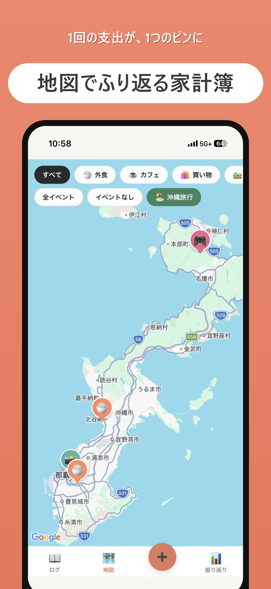
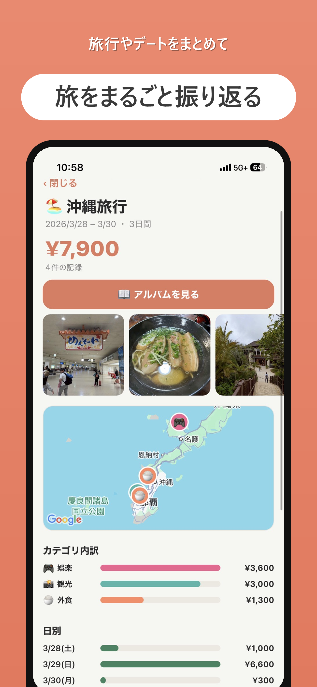
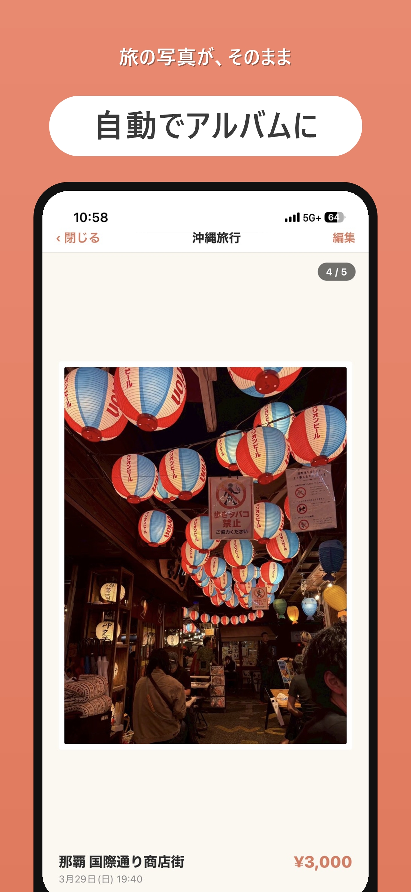

地図で振り返る
支出が写真や絵文字のピンになり、訪れた場所を一望できます。
1回の支出が、地図の1つのピンになる。
旅先で使ったお金を写真や場所と一緒に記録。地図、アルバム、共有ブック、割り勘まで、旅の思い出とお金をひとつにまとめます。
App Storeで入手 ↗
Features
支出が写真や絵文字のピンになり、訪れた場所を一望できます。
招待コードだけで共同記録。誰が払ったかも自動で集計します。
旅行ごとに写真をまとめ、配置や文字を自分好みに編集できます。
How to use
旅行やおでかけの名前と期間を決めます。
金額、写真、場所を記録。現在地からお店も選べます。
地図とアルバムを眺め、必要なら割り勘を精算します。
Screens



無料で始められます。
App Storeで入手 ↗